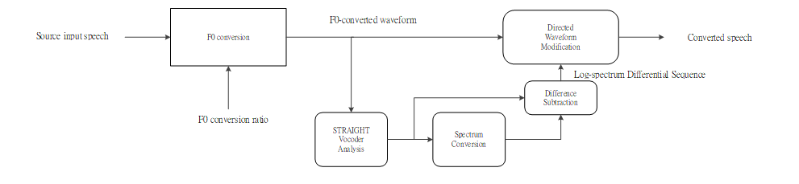
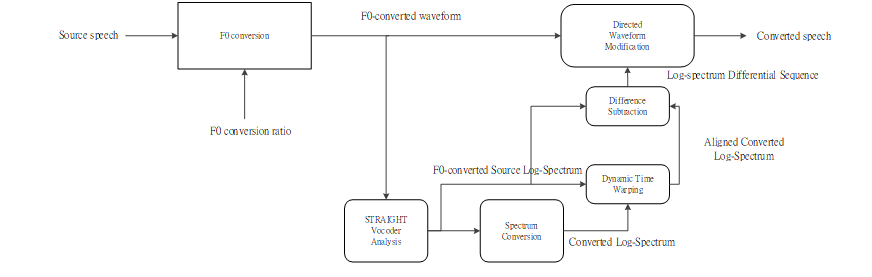
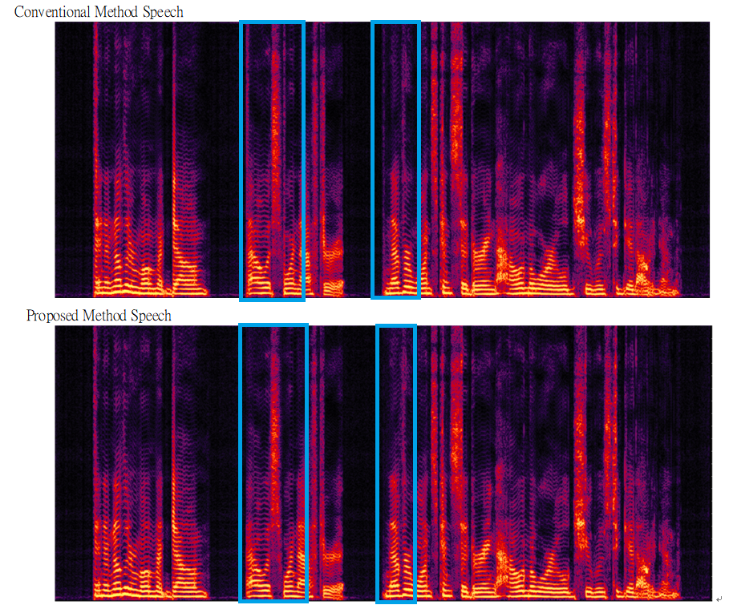

This is a demo page for Alleviating Discontinuity Effects on Direct Waveform Modification for Voice Conversion Synthesis. (Ongoing Work)
Conventional Vocoder-Free Voice Conversion methods with direct waveform modification based on spectrum differentials is known to synthesize more natural speech than vocoder-based methods; however, when the f0-transformation ratio is relatively large, synthesized waveform results in some collapse waveform between spoken words that lowers the synthesis quality.
Here is a conventional flow chart for the Vocoder-free Voice Conversion method based on direct waveform modification.

We evaluated our proposed framework on the Voice Conversion Challenge 2018 (VCC 2018) dataset. [Paper][Dataset]
We tested our method on the pair SM1 to TF1, where the f0-transformation ratio is relatively large (1.99).
F0 transformation is done with duration conversion with Waveform Similarity and Overlap Add (WSOLA) and resampling.
A flowchart of our proposed method is provided below.

F stands for female speakers, M stands for male speakers.
| Type | Sample |
|---|---|
| Source (VCC2SM1) | |
| Target (VCC2TF1) | |
| Conventional Method Speech | |
| Our Proposed Method Speech |

As we can see from the above image, Speech synthesized by the conventional Vocoder-Free Voice Conversion methods with direct waveform modification based on spectrum differentials results in some pulses in the spectroram, and our propsed method alleviates the effect.